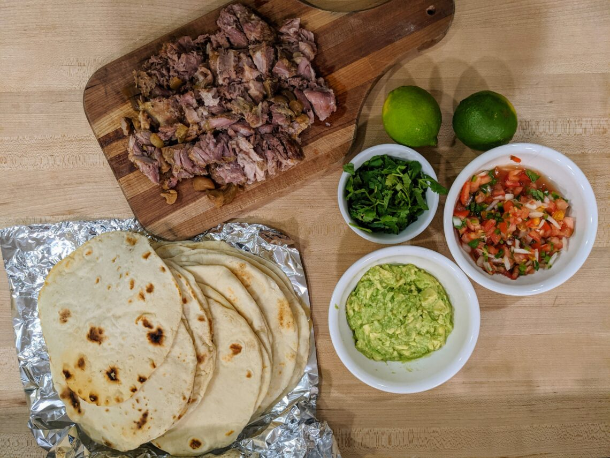

I used to eat these tacos all the time when traveling to tijuana on mission work. I would always try a few new ones such as the lengua or cabeza, but the ones I always found my way back to were the simple ones with regular beef. There was always something about that smoky seared beef combines with th e freshly made corn tortillas and salsa guacamole that I could never get enough of!
Now all these years later I still get a desire to eat another round of these delightful little packages of goodness. So after a few iterations here is the best that I can come up with. Frankly, I think it pretty closely captures what I remember, although, you have to spend some time in Tijuana to really appreciate them.